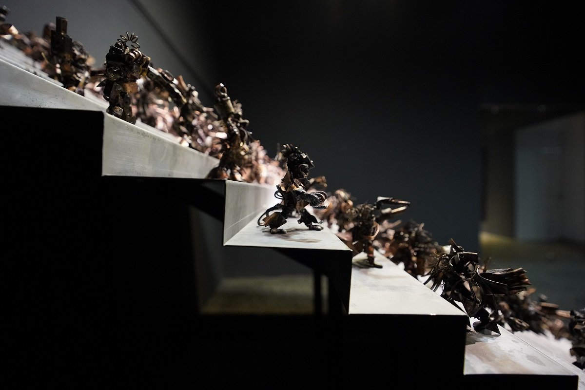
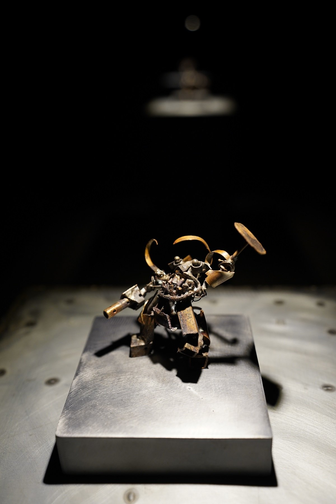
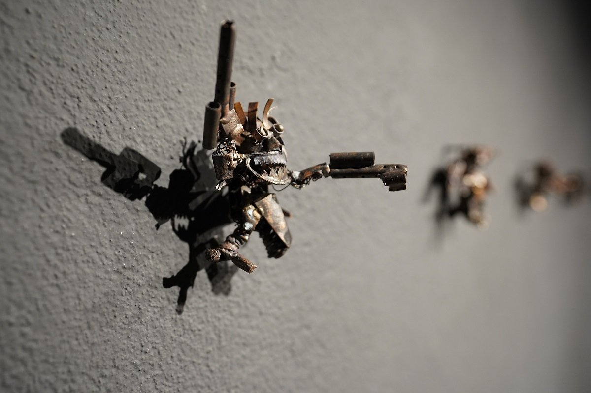
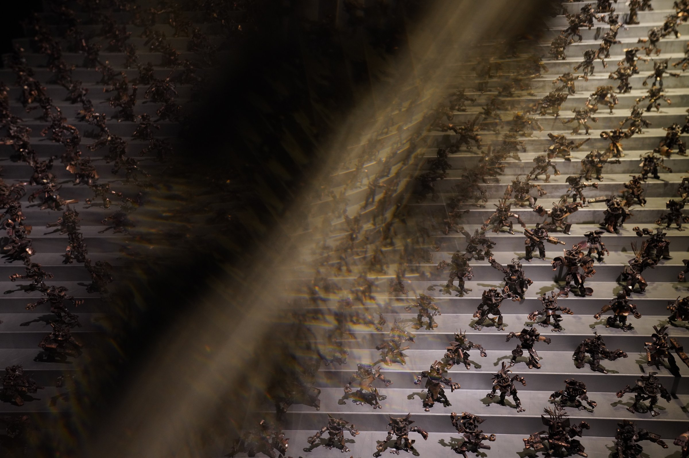

Kingsley Gunatillake's Maara exhibition invites the viewer into a complex and layered exploration of desire, creation, and the unconscious. With conceptual audacity and aesthetic sophistication, the exhibition pushes the boundaries of Gunatillake's distinct auteuristic approach, inviting contemplation on the nature of human ambition, spirituality, and the psyche.
Drawing inspiration from his longstanding connection with Japan, especially the minimalist elegance found in its cultural expressions, the exhibition's conceptual seed was sown during a visit to the Sanjūsangen-dō shrine in Kyoto. There, Gunatillake encountered the 1,001 statues of Kannon, which ignited the idea for Maara — a project that would take nearly three years to materialize.




At the core of Maara lies a reimagined vision of Māra, traditionally conceived in Buddhist cosmology as a tempter and deceiver — the embodiment of illusion and desire. However, Gunatillake recasts Māra as not merely an antagonist, but as a dynamic, life-affirming force.
Challenging the binary of good versus evil, he contends that desire, often framed as the root of suffering, is, in fact, a fundamental catalyst for human creativity and purpose. For Gunatillake, Māra becomes a symbol not of malevolence but of ambition — a force that drives humans to dream, innovate, and transcend.
Through this provocative reinterpretation, he urges the viewer to question whether we should vilify desire or, instead, recognize it as the very energy that fuels existence.
"Desire — often framed as the root of suffering — is, in fact, a fundamental catalyst for human creativity and purpose."
 1,001 Figures · Saskia Gallery
1,001 Figures · Saskia Gallery
A centerpiece of the exhibition is a series of intricate bronze figurines, each an embodiment of this reinterpreted Māra. These figures fuse the aesthetics of the Samurai with futuristic, mechanized motifs, evoking both the ancient and the contemporary — making it simply timeless.
While originally conceived as a collection of 1,001 figurines, the exhibition showcases all 1,001, each with its own distinct facial expression — some fierce, others joyful, all brandishing a combination of traditional and modern weaponry.
Placed within a darkened room, mounted on steel steps and surrounded by crushed stone, the figures encourage deliberate navigation. This arrangement, at once simple and profound, heightens the viewer's awareness, urging them to slow down and reflect on the work with mindful attention.


The paintings in Maara evoke the dynamic essence of Māra through both fluid gestures and layered, bold strokes. Some works are defined by a singular, sweeping movement, capturing the fleeting reflections and gestures of the protagonist, while others are built through layers of intense brushwork, gradually revealing the multifaceted nature of Māra.
The interplay of gold, silver, and copper hues against darker tones creates a subtle dance of light and shadow, which shifts in response to the changing ambient lighting. As the light fades, hidden metallic glimmers rise to the surface, reflecting the concealed desires and complexities of the unconscious.
In this way, the paintings transcend their visual form, becoming metaphors for the psyche — fluid, ever-changing, and intricately connected to the unconscious forces that drive human experience.



Exhibition ViewIn Maara, one might also trace the influence of psychoanalytic theory, particularly Freud's conception of the id — the unconscious forces of desire and instinct that propel human behavior.
Gunatillake's portrayal of Māra as a driving, creative energy aligns with this notion, suggesting that these primal impulses, though often suppressed, are intrinsic to the human condition.
The exhibition becomes, then, a meditation on the darker, more instinctual aspects of the self — forces that, while frequently misunderstood or repressed, are essential to human existence.


Despite the conceptual depth and artistic achievement of Maara, the exhibition's full impact is tempered by the limitations of the Saskia Gallery's physical space. The gallery's constraints necessitated the display of only 800 figures, a reduction from the artist's original vision.
Moreover, the close proximity of the large-scale paintings detracted from their immersive potential, creating a sense of visual congestion that interrupted the meditative experience central to Gunatillake's work. The expansive, contemplative qualities of the pieces demand not just space, but time for reflection — something that the constrained environment was unable to fully provide.
 1,001 Figures · Installation Detail
1,001 Figures · Installation Detail
Maara is a striking showcase of Gunatillake's artistic finesse, where every element of the exhibition invites reflection. The bronze figurines stand as delicate yet powerful representations of Māra, merging traditional and futuristic styles in a way that feels both timeless and contemporary.
The paintings, with their layers of gold, silver, and copper, create a shifting dance of light and shadow, drawing the viewer in with every glance. The subtle changes in tone and texture offer a glimpse into the hidden depths of desire and the unconscious, encouraging a deeper exploration of self.
At its core, the exhibition reimagines Māra not as an antagonist, but as a force of creativity and ambition, highlighting how desire shapes both our actions and our potential. Maara remains a thought-provoking and immersive experience, blending aesthetic beauty with philosophical depth — offering both a visual and intellectual journey.